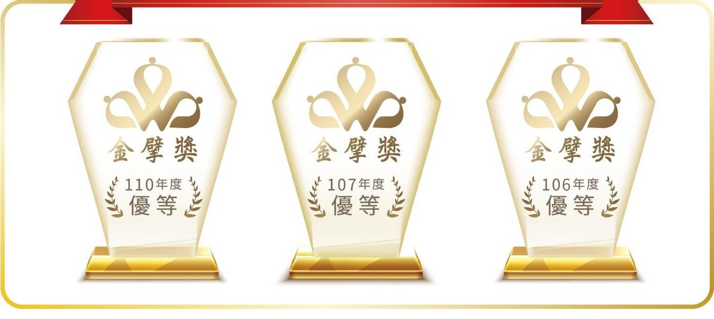

深入在地・便利停車・智慧生活
大日開發自民國 88 年起經營停車場，從公有地下停車場到商業空間與休閒場域，用智慧設備與在地服務照顧每一位用路人。
我們的事業
公有與民間停車場委外經營，涵蓋臺北、新北、桃園、基隆。
結合商業空間、餐飲與休閒遊憩，讓停車延伸成完整的到訪體驗。
連鎖不複製
「科學之森・友善 START」，讓停車成為科學互動的第一步。
Show Long 行歸處。
科技與安全並行。
全面同行，有愛通學。
多年新北評鑑特優。
智慧及貼心服務
進出場自動辨識車牌，減少排隊與票卡遺失。
行動支付、電子票證與車牌綁定扣款，依場站提供。
即時顯示空位，輸入車牌即可查詢停放區位。
電子化巡場與案件管理，問題即時派工處理。

榮譽獎項
最新消息
永續 ESG
每年提撥營餘投入公益：贊助基層球隊、希望工程課後照顧與公益捐血，108 年獲頒華人公益大使。
停車場委外經營，或商業空間、休閒場域等多元化合作，都歡迎聯繫。